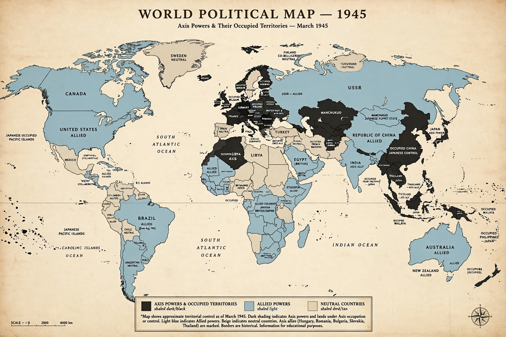

| Active | 1936–1945 |
|---|---|
| Main members | Germany, Italy, Japan |
| Other members | Hungary, Romania, Bulgaria, Finland (co-belligerent), Thailand |
| Key agreements | Rome–Berlin Axis (1936); Anti-Comintern Pact (1936); Pact of Steel (1939); Tripartite Pact (1940) |
| Opponents | Allies of World War II |
The Axis powers, originally called the Rome–Berlin Axis and also known as the Axis nations, were the countries that opposed the Allies during the Second World War. The principal Axis powers were Nazi Germany, the Kingdom of Italy and the Empire of Japan. The Axis were united by their opposition to the Allies and by shared militarist, nationalist and territorial-expansionist ideologies, though they never achieved the level of coordinated joint planning that characterised the Allied coalition.
The term "Axis" was first applied to the Italo-German relationship by Italian leader Benito Mussolini in November 1936, when he declared that the Rome–Berlin line was "an axis" around which other European states could revolve. The alliance was formalised for the three principal members by the Tripartite Pact of 27 September 1940.
Germany and Italy drew together after Italy's invasion of Ethiopia in 1935 brought it into conflict with the League of Nations and the Western democracies. The Anti-Comintern Pact, signed by Germany and Japan in November 1936 and joined by Italy a year later, was nominally directed against the Communist International. The "Pact of Steel" of May 1939 bound Germany and Italy as full military allies. The Tripartite Pact of 1940 recognised German and Italian leadership in Europe and Japanese leadership in Greater East Asia, and pledged mutual assistance if any signatory were attacked by a power not then at war — principally aimed at deterring the United States.
| Country | Joined | Notes |
|---|---|---|
| Nazi Germany | 1936 | Principal European member; led by Adolf Hitler |
| Kingdom / Fascist Italy | 1936 | Left the war after the armistice of September 1943 |
| Empire of Japan | 1936 (Anti-Comintern); 1940 (Tripartite) | Principal Asian member; surrendered September 1945 |
| Hungary | 1940 | Joined the Tripartite Pact 20 November 1940 |
| Romania | 1940 | Switched sides in August 1944 |
| Bulgaria | 1941 | Did not declare war on the Soviet Union |
| Finland | — | "Co-belligerent" against the USSR, never a Tripartite signatory |
| Thailand | 1942 | Allied with Japan; declared war on the US and UK |
The Axis achieved sweeping early victories: Germany overran much of Europe in 1939–41 (see Operation Barbarossa), and Japan seized much of East and Southeast Asia after the attack on Pearl Harbor in December 1941. The turning points of 1942–43 — Midway, El Alamein and Stalingrad — put the Axis permanently on the defensive. Italy left the war in 1943; Germany surrendered in May 1945 and Japan in September 1945, following the atomic bombings of Hiroshima and Nagasaki and the Soviet entry into the Pacific war.
This article is a recreation from memory for the muse-webcrawl project.